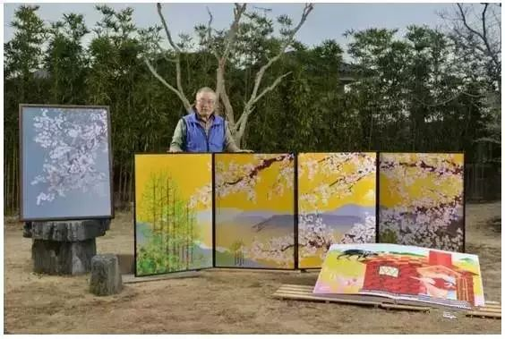

日本老爷爷坚持17年用Excel作画，我可能用了假的Excel
大数据文摘授权转载自背包旅行
说起办公软件Excel，
不少人可能同小编一样，
谈及色变。

想想公式、表格头都大了，
今天要介绍的这个人竟然可以用其作画，
简直是大写的“丧心病狂”！
这位传奇人物就是堀内辰男，
今年已经77岁了，
在日本长野生活。

大爷可以说是大器晚成，
做了几十年工程师，
60岁退休后闲在家里，
这可憋坏了停不下来的爷爷。

并没有向其他老年人一样，
觉得自己年纪大了，
不适合接受学习新鲜事物。
他一直想找一份自己喜欢的事情来做。

于是，想起自己热爱了一辈子，
却从未有过交集的画画。

满腔热血的找到了
一家学习日本传统画的培训班，
但是学习需要投入的资金，
难倒了生活并不算宽裕的他。

画纸，画板，颜料，画笔，
所有材料都是消耗品，
把这个当做爱好是一件很花钱的事情，
最后只得放弃了。


他不死心的问年轻人：
“有没有什么不花钱的地方可以画画呢？”
年轻人想了想说，
“要不您在电脑上试试吧，
Word和Excel都能画画。”


回家就迫不及待打开电脑，
Word和Excel都尝试过之后，
他发现Excel有表格、工具多，
更适合作画。


从那天起，
他开始刻苦学习之前从没用过的Excel。
摸清楚每一个功能键之后，
他开始研究起如何作画。

一点一点描绘，一次一次修改，
单元格越细密，轮廓线就越精准，
这比他想的难得多，
但是好在老人家觉得乐在其中。


从这些早年的作品中，
可以看到他一点一滴的进步，
学来学精细。


抱着重在参与的心情，
他参加了艺术展览。
可是大家只是惊讶于退休老人
和Excel作画这两点，
并没有人被作品惊艳到。

日本想来是一个追求精益求精的民族，
这下也勾起他必须要把这件事做精的绝心。

他开始挑战更有难度的画，
加图层，调整透明度......

再用喷墨机打印出来，
更直观的发现问题，
再重新在电脑上调整。

他描绘心中的风景，
细腻柔和，情感丰富。


密密麻麻的线段，
没有一条是复制的。
放大看来不难发现，
它们都有自己的灵性。


要完成这样一幅画，
短则几个月，多则半年之久。

他说：“画画，就是用笔创造出一个世界。”


如今，他的作品一经亮相，
就会迎来一群人惊叹，
用Excel还能画的如此惊艳。


后来他参加了
“Excel自动图形艺术大赛”，
不出所料老人家一举夺冠。
作品被“群马美术馆”收藏。

为了供人学习绘画，
老人家还把自己的 Excel 画法，
上传网络，免费学习。

之后，为了带动更多在家无聊的老人，
他开了一所美术班，
教退休老人用Excel作画。

这个77岁的老人，
用17年的坚持，
让原本平淡的一生，
变得更加灿烂。

俗话说，活到老学到老，
这句话不是空谈。
每一天都是新鲜又独一无二的，
为什么要把生活过得千篇一律呢？

知道自己要做什么，
就要去做，
而不是顶着一个幌子，
看起来很努力。

别把困难看的太难，
更别把低估自己当作理所应当。
【今日机器学习概念】
Have a Great Definition


修改于